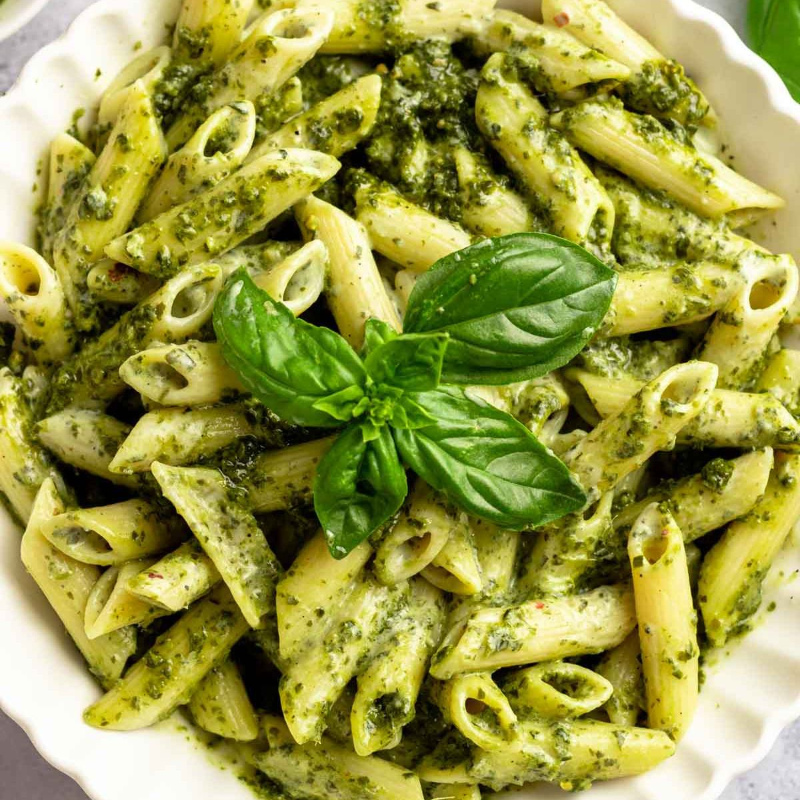

Pizza Margherita
Margherita pizza features a bubbly crust, crushed San Marzano tomato sauce, fresh mozzarella and basil, a drizzle of olive oil, and a sprinkle of salt.

Pasta Carbonara
Creamy Carbonara is made by sautéing boiled pasta noodles, fried ham, fried bacon and mushroom in a sauce made by evaporated milk, all purpose cream.

Lasagna
Lasagna is generally made with dried sheets of pasta layered with rich meat ragú, ricotta and mozzarella.

Tiramisu
Tiramisu is an elegant and rich layered Italian dessert made with delicate ladyfinger cookies, espresso or instant espresso, mascarpone cheese, eggs, sugar, Marsala wine, rum and cocoa powder.

Spagetthi Bolognese
Spagetthi Bolognese is a beautiful, slow-cooked meat sauce made from ground beef and/or pork, chopped carrots, onion, celery, milk, wine, tomato paste and stock.

Pesto
Pesto is traditionally made with crushed garlic, basil, and pine nuts, blended with Parmesan cheese and olive oil.